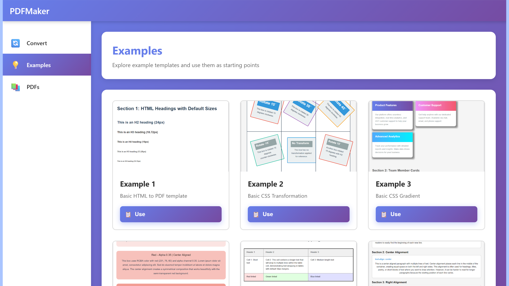

PDFMaker
Professional HTML to PDF Converter
Transform your HTML documents into beautifully formatted PDF files with full CSS styling support. Built with Rust for maximum performance and reliability, PDFMaker handles everything from simple documents to complex layouts with web fonts, images, and international text.
Get it on Google PlayKey Features
CSS3 Support
Complete CSS3 implementation including flexbox layouts, CSS gradients, box shadows, border radius, and pseudo-elements (::before, ::after, ::first-letter) for pixel-perfect document styling.
Web Font Integration
Load custom fonts via @font-face rules with support for WOFF2, WOFF, and TTF formats. Automatic font caching ensures fast subsequent conversions. Font subsetting keeps PDF files compact.
International Text Support
Full Unicode support with OpenType text shaping via rustybuzz. Correctly renders Arabic, Hebrew (RTL scripts), Chinese, Japanese, Korean (CJK), and other complex scripts.
SVG Vector Graphics
High-quality SVG rendering powered by resvg. Embed icons, charts, diagrams, and vector illustrations that scale perfectly in your PDF documents.
Multiple Paper Sizes
Support for standard paper sizes including A3, A4, A5, US Letter, and US Legal. Custom dimensions can be specified via CSS @page rules or command-line options.
Image Embedding
Embed images in JPEG, PNG, GIF, WebP, and BMP formats. Base64-encoded inline images are supported for self-contained HTML documents.
CSS Variables
Use CSS custom properties (variables) defined in :root for consistent theming across your documents. Dynamic value resolution throughout your stylesheets.
Table Layouts
Proper HTML table rendering with support for complex table structures, cell spanning, borders, and background colors for professional data presentation.
Technology Stack
Perfect For
- Invoice and receipt generation
- Report creation from templates
- Certificate and document printing
- E-commerce order confirmations
- Newsletter and email archiving
- Resume and CV formatting
- Multi-language document support
- Branded document generation
How It Works
PDFMaker uses a multi-stage pipeline to convert HTML to PDF:
- HTML Parsing: The HTML document is parsed into a DOM tree using the scraper library.
- CSS Processing: All CSS (external files, <style> tags, and inline styles) is parsed and computed styles are calculated for each element.
- Layout Calculation: A layout tree is built with precise positioning, handling flexbox, text wrapping, and page breaks.
- Text Shaping: Complex scripts (Arabic, Hebrew, CJK) are shaped using rustybuzz for correct glyph positioning and ligatures.
- Rendering: The layout is rendered to a display list with all visual elements (text, images, shapes, gradients).
- PDF Generation: The final PDF is generated with embedded fonts (subsetted for size optimization) and compressed content streams.
Application Screenshot
Get PDFMaker
PDFMaker is available on Google Play for Android devices. Download now and start converting your HTML documents to professional PDF files.
Download on Google Play